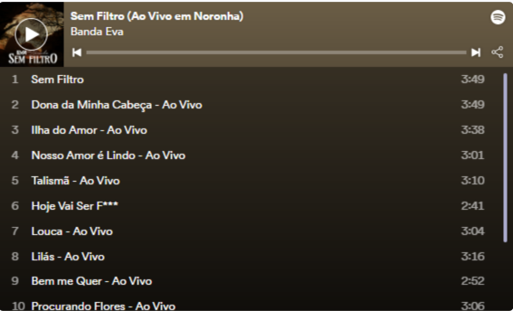

Felipe Pezzoni fala sobre mistura de ritmos em novo DVD da Banda Eva: ‘A gente não quis se limitar’
Projeto foi lançado no dia 22 de julho e já pode ser acessado no Globoplay
Pagode e reggae, ritmos diferentes do tradicional axé da Banda Eva, mas que fazem parte do novo DVD do grupo, lançado no último dia 22 de julho. “Sem Filtro” tem a participação de Maneva, Babado Novo e a ilha paradisíaca de Fernando de Noronha como cenário.

A essência é sem filtro porque a gente não quis se limitar a ‘isso é ou não axé’. Quisemos fazer música
Vocalista Felipe Pezzoni

Em entrevista ao Jornal Massa, o vocalista Felipe Pezzoni falou sobre as inspirações, dificuldades e bastidores do novo projeto. “A essência é sem filtro porque a gente não quis se limitar a ‘isso é ou não axé’. Quisemos fazer música”, explica, descrevendo a mistura de ritmos.
Em entrevista ao Jornal Massa, o vocalista Felipe Pezzoni falou sobre as inspirações, dificuldades e bastidores do novo projeto. “A essência é sem filtro porque a gente não quis se limitar a ‘isso é ou não axé’. Quisemos fazer música”, explica, descrevendo a mistura de ritmos.
“O som veio depois do que eu vi, tentei explicar o que aquele visual trazia para nós. Foi o visual que trouxe a sonoridade. O todo me deu de presente a trilha sonora”, diz Felipe.
A construção do repertório teve influência do cenário paradisíaco, o que não deixou dúvidas na escolha do local para a gravação. “No final do processo a gente entendeu que não fomos nós que escolhemos a ilha, foi ela que nos escolheu. Quando terminou, falei: ‘não, tinha como não ser aqui'”, revela o artista.
Confira o repertório:
“Mina na Areia”, “Louca”, “Sem filtro” e regravações de singles da Banda Eva compõem o novo álbum. Além das músicas conhecidas pelo público, sucessos brasileiros como “Dona da Minha Cabeça”, de Geraldo Azevedo, e “Lilás”, de Djavan, também entraram no repertório.
“Foi algo, realmente, de entregar a responsabilidade para o universo”, conta Felipe sobre a criação das canções. O cantor ainda explica que a escolha de “Talismã” em ritmo de reggae aconteceu de forma natural.